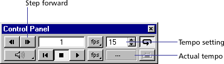

Using Director > Color, Tempo, and Transitions > About tempo > Comparing actual speed with tempos you've set
Using Director > Color, Tempo, and Transitions > About tempo > Comparing actual speed with tempos you've set |
Comparing actual speed with tempos you've set
It's good practice to test the performance of your movie on a system similar to what your users have. Make sure the movie plays well on the slowest systems likely to be used.
The tempo you've set and the actual speed of a movie both appear in the Control Panel.

To compare the actual speed of a movie with the tempos you've set:
1 |
Play the movie from start to finish, then rewind it to the beginning. |
2 |
Use the Step Forward button to step through the movie frame by frame, |
3 |
In each frame, compare the tempo setting shown in the Control Panel with the actual speed shown there. |
If you haven't recorded the actual speed of a movie in a particular frame, the Control Panel displays two dashes (--). |
|